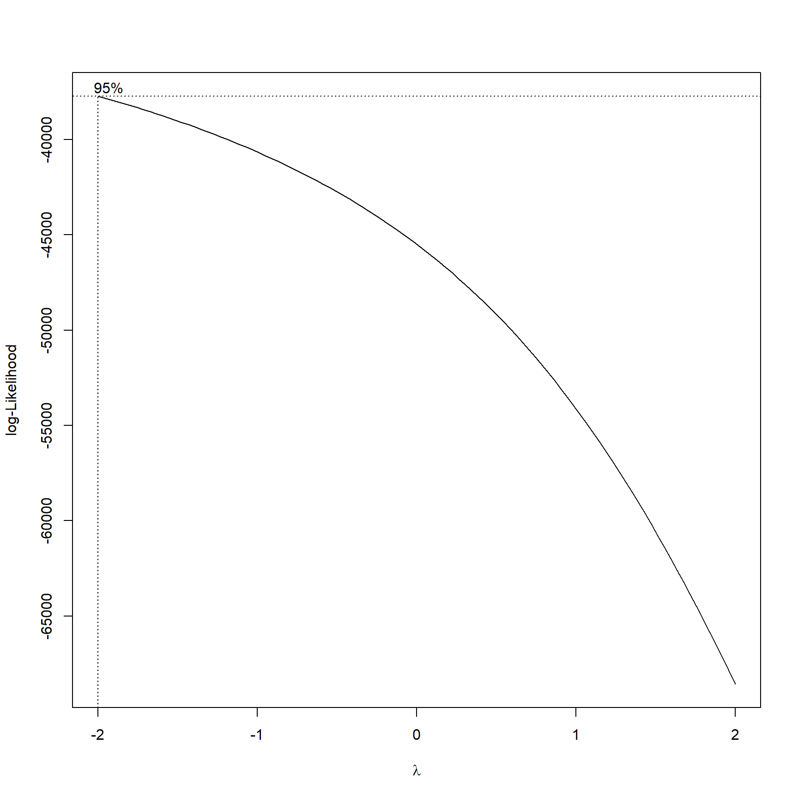
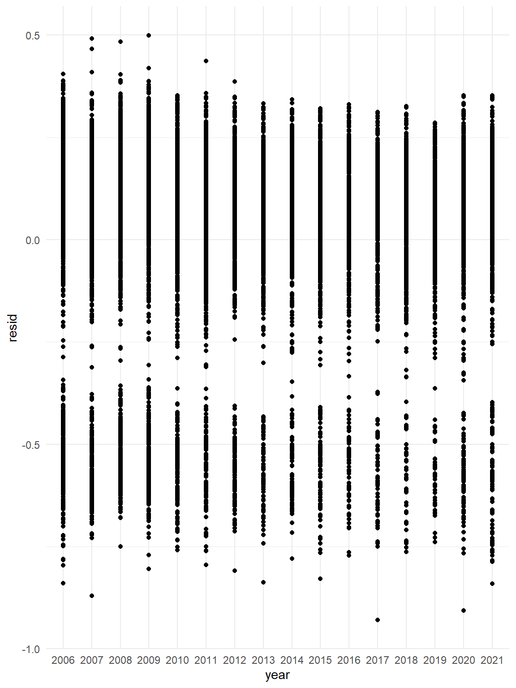
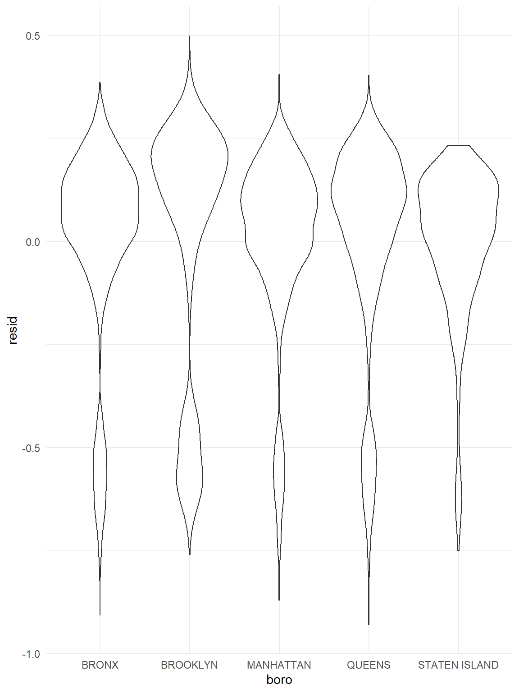
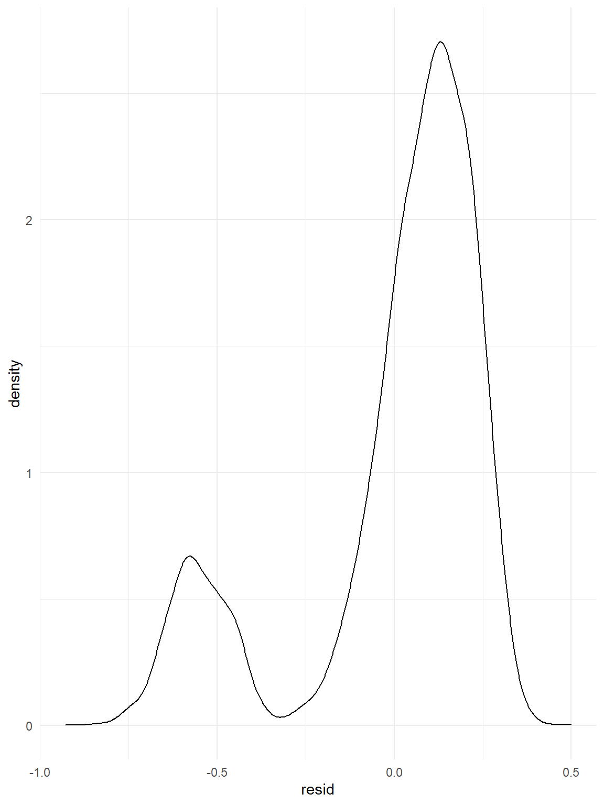
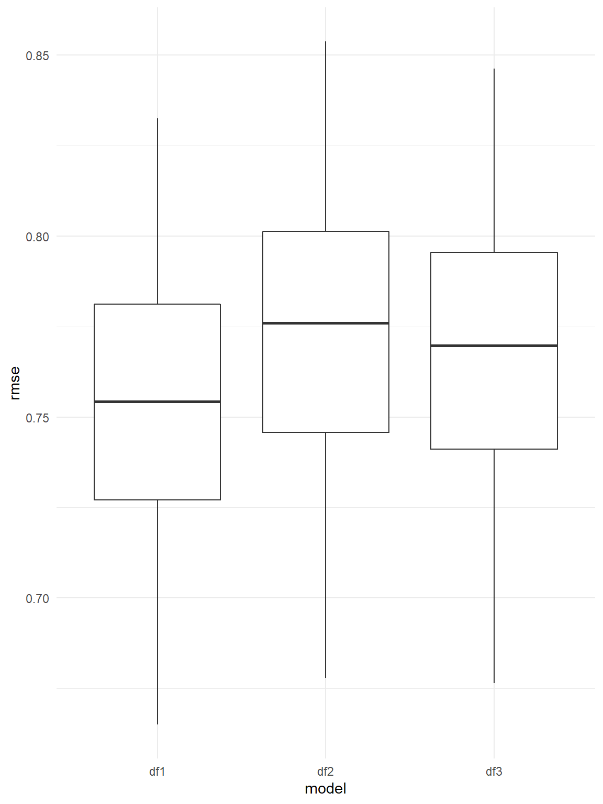

The NYPD Shooting Data was collected from the NYC Open Data. The dataset includes 1,531 rows and 19 columns. The variables included in the dataset were listed below:
The box-cox method is applied in the model to determine the transformation of outcome variable. The variable ‘location_desc’ includes too many missing value. It was not included in the multiple linear regression analysis. All the missing values from our dataset was omitted. The λ is close to - 2, 1 / Y transformation is applied.

| term | estimate | std.error | statistic | p.value |
|---|---|---|---|---|
| (Intercept) | 1.226 | 0.158 | 7.767 | 0.000 |
| Year:2007 | 0.035 | 0.008 | 4.486 | 0.000 |
| Year:2008 | 0.013 | 0.008 | 1.616 | 0.106 |
| Year:2009 | 0.001 | 0.008 | 0.122 | 0.903 |
| Year:2010 | 0.045 | 0.008 | 5.386 | 0.000 |
| Year:2011 | 0.053 | 0.009 | 6.015 | 0.000 |
| Year:2012 | 0.049 | 0.009 | 5.254 | 0.000 |
| Year:2013 | 0.066 | 0.010 | 6.809 | 0.000 |
| Year:2014 | 0.049 | 0.010 | 5.108 | 0.000 |
| Year:2015 | 0.048 | 0.009 | 5.070 | 0.000 |
| Year:2016 | 0.055 | 0.010 | 5.504 | 0.000 |
| Year:2017 | 0.072 | 0.010 | 6.919 | 0.000 |
| Year:2018 | 0.063 | 0.011 | 6.006 | 0.000 |
| Year:2019 | 0.087 | 0.010 | 8.375 | 0.000 |
| Year:2020 | 0.043 | 0.009 | 4.736 | 0.000 |
| Year:2021 | 0.041 | 0.010 | 4.216 | 0.000 |
| Month:February | 0.021 | 0.010 | 2.198 | 0.028 |
| Month:March | 0.005 | 0.009 | 0.508 | 0.611 |
| Month:April | -0.003 | 0.009 | -0.287 | 0.774 |
| Month:May | -0.009 | 0.009 | -1.079 | 0.281 |
| Month:June | -0.029 | 0.009 | -3.399 | 0.001 |
| Month:July | -0.029 | 0.008 | -3.404 | 0.001 |
| Month:August | -0.031 | 0.008 | -3.653 | 0.000 |
| Month:September | -0.016 | 0.009 | -1.888 | 0.059 |
| Month:October | -0.009 | 0.009 | -1.063 | 0.288 |
| Month:November | 0.004 | 0.009 | 0.466 | 0.641 |
| Month:December | -0.008 | 0.009 | -0.832 | 0.405 |
| Borough:BROOKLYN | -0.050 | 0.005 | -11.161 | 0.000 |
| Borough:MANHATTAN | 0.033 | 0.005 | 6.104 | 0.000 |
| Borough:QUEENS | 0.015 | 0.005 | 2.815 | 0.005 |
| Borough:STATEN ISLAND | 0.074 | 0.009 | 8.270 | 0.000 |
| Muder Flag:TRUE | 0.056 | 0.004 | 13.126 | 0.000 |
| Perpetrator sex:M | -0.077 | 0.011 | -7.234 | 0.000 |
| Perpetrator sex:U | -0.178 | 0.016 | -11.104 | 0.000 |
| Perpetrator race:ASIAN / PACIFIC ISLANDER | -0.055 | 0.140 | -0.394 | 0.694 |
| Perpetrator race:BLACK | -0.117 | 0.139 | -0.842 | 0.400 |
| Perpetrator race:BLACK HISPANIC | -0.043 | 0.139 | -0.310 | 0.756 |
| Perpetrator race:UNKNOWN | -0.034 | 0.139 | -0.242 | 0.809 |
| Perpetrator race:WHITE | -0.087 | 0.140 | -0.624 | 0.533 |
| Perpetrator race:WHITE HISPANIC | -0.058 | 0.139 | -0.421 | 0.674 |
| Victim sex:M | -0.095 | 0.005 | -18.192 | 0.000 |
| Victim sex:U | -0.030 | 0.070 | -0.425 | 0.671 |
| Victim race:ASIAN / PACIFIC ISLANDER | -0.020 | 0.075 | -0.265 | 0.791 |
| Victim race:BLACK | -0.128 | 0.074 | -1.727 | 0.084 |
| Victim race:BLACK HISPANIC | -0.030 | 0.074 | -0.401 | 0.689 |
| Victim race:UNKNOWN | -0.003 | 0.080 | -0.033 | 0.974 |
| Victim race:WHITE | -0.031 | 0.075 | -0.407 | 0.684 |
| Victim race:WHITE HISPANIC | -0.048 | 0.074 | -0.645 | 0.519 |
Our regression model included year, month, borough, perpetrator’s sex and race, and victim’s sex and race as the predictors. The regression results year, month, borough, perpetrator’s sex, and victim’s sex are significant predictor variable for the number of shooting in NYC. Among the month variable, May, June, July, August, September, October, and December have lower number of shooting than January.And among the borough, compared with Bronx, Brooklyn have less number of shooting, and Manhattan, Queens, and Staten Island have more number of shooting.The next step is to use stepwise regression in backward direction to build our regression model.
## Start: AIC=-41162.41
## number_shoot ~ year + month + boro + statistical_murder_flag +
## perp_sex + perp_race + vic_sex + vic_race
##
## Df Sum of Sq RSS AIC
## <none> 484.22 -41162
## - month 11 2.7532 486.97 -41113
## - perp_sex 2 4.7390 488.95 -41043
## - year 15 6.9645 491.18 -41012
## - statistical_murder_flag 1 6.6222 490.84 -40993
## - perp_race 6 9.7584 493.97 -40922
## - vic_sex 2 12.7473 496.96 -40838
## - boro 4 15.2279 499.44 -40779
## - vic_race 6 20.9959 505.21 -40638| term | estimate | std.error | statistic | p.value |
|---|---|---|---|---|
| (Intercept) | 1.226 | 0.158 | 7.767 | 0.000 |
| Year:2007 | 0.035 | 0.008 | 4.486 | 0.000 |
| Year:2008 | 0.013 | 0.008 | 1.616 | 0.106 |
| Year:2009 | 0.001 | 0.008 | 0.122 | 0.903 |
| Year:2010 | 0.045 | 0.008 | 5.386 | 0.000 |
| Year:2011 | 0.053 | 0.009 | 6.015 | 0.000 |
| Year:2012 | 0.049 | 0.009 | 5.254 | 0.000 |
| Year:2013 | 0.066 | 0.010 | 6.809 | 0.000 |
| Year:2014 | 0.049 | 0.010 | 5.108 | 0.000 |
| Year:2015 | 0.048 | 0.009 | 5.070 | 0.000 |
| Year:2016 | 0.055 | 0.010 | 5.504 | 0.000 |
| Year:2017 | 0.072 | 0.010 | 6.919 | 0.000 |
| Year:2018 | 0.063 | 0.011 | 6.006 | 0.000 |
| Year:2019 | 0.087 | 0.010 | 8.375 | 0.000 |
| Year:2020 | 0.043 | 0.009 | 4.736 | 0.000 |
| Year:2021 | 0.041 | 0.010 | 4.216 | 0.000 |
| Month:February | 0.021 | 0.010 | 2.198 | 0.028 |
| Month:March | 0.005 | 0.009 | 0.508 | 0.611 |
| Month:April | -0.003 | 0.009 | -0.287 | 0.774 |
| Month:May | -0.009 | 0.009 | -1.079 | 0.281 |
| Month:June | -0.029 | 0.009 | -3.399 | 0.001 |
| Month:July | -0.029 | 0.008 | -3.404 | 0.001 |
| Month:August | -0.031 | 0.008 | -3.653 | 0.000 |
| Month:September | -0.016 | 0.009 | -1.888 | 0.059 |
| Month:October | -0.009 | 0.009 | -1.063 | 0.288 |
| Month:November | 0.004 | 0.009 | 0.466 | 0.641 |
| Month:December | -0.008 | 0.009 | -0.832 | 0.405 |
| Borough:BROOKLYN | -0.050 | 0.005 | -11.161 | 0.000 |
| Borough:MANHATTAN | 0.033 | 0.005 | 6.104 | 0.000 |
| Borough:QUEENS | 0.015 | 0.005 | 2.815 | 0.005 |
| Borough:STATEN ISLAND | 0.074 | 0.009 | 8.270 | 0.000 |
| Muder Flag:TRUE | 0.056 | 0.004 | 13.126 | 0.000 |
| Perpetrator sex:M | -0.077 | 0.011 | -7.234 | 0.000 |
| Perpetrator sex:U | -0.178 | 0.016 | -11.104 | 0.000 |
| Perpetrator race:ASIAN / PACIFIC ISLANDER | -0.055 | 0.140 | -0.394 | 0.694 |
| Perpetrator race:BLACK | -0.117 | 0.139 | -0.842 | 0.400 |
| Perpetrator race:BLACK HISPANIC | -0.043 | 0.139 | -0.310 | 0.756 |
| Perpetrator race:UNKNOWN | -0.034 | 0.139 | -0.242 | 0.809 |
| Perpetrator race:WHITE | -0.087 | 0.140 | -0.624 | 0.533 |
| Perpetrator race:WHITE HISPANIC | -0.058 | 0.139 | -0.421 | 0.674 |
| Victim sex:M | -0.095 | 0.005 | -18.192 | 0.000 |
| Victim sex:U | -0.030 | 0.070 | -0.425 | 0.671 |
| Victim race:ASIAN / PACIFIC ISLANDER | -0.020 | 0.075 | -0.265 | 0.791 |
| Victim race:BLACK | -0.128 | 0.074 | -1.727 | 0.084 |
| Victim race:BLACK HISPANIC | -0.030 | 0.074 | -0.401 | 0.689 |
| Victim race:UNKNOWN | -0.003 | 0.080 | -0.033 | 0.974 |
| Victim race:WHITE | -0.031 | 0.075 | -0.407 | 0.684 |
| Victim race:WHITE HISPANIC | -0.048 | 0.074 | -0.645 | 0.519 |
The backward stepwise regression chose the regression model with minimum AIC value. However, the stepwise regression did not omit any predictor, which indicates that the current regression model is sufficient to explain the outcome - number of shooing in NYC.
##
## Call:
## lm(formula = number_shoot ~ year + month + boro + statistical_murder_flag +
## perp_sex + perp_race + vic_sex + vic_race, data = mlr_lm)
##
## Residuals:
## Min 1Q Median 3Q Max
## -0.69726 -0.03078 0.05856 0.12567 0.35808
##
## Coefficients:
## Estimate Std. Error t value Pr(>|t|)
## (Intercept) 1.2262078 0.1578656 7.767 8.63e-15 ***
## year2007 0.0348428 0.0077674 4.486 7.33e-06 ***
## year2008 0.0125014 0.0077366 1.616 0.106146
## year2009 0.0009724 0.0079689 0.122 0.902885
## year2010 0.0446740 0.0082950 5.386 7.35e-08 ***
## year2011 0.0527293 0.0087660 6.015 1.85e-09 ***
## year2012 0.0490162 0.0093294 5.254 1.51e-07 ***
## year2013 0.0662468 0.0097290 6.809 1.03e-11 ***
## year2014 0.0494474 0.0096808 5.108 3.31e-07 ***
## year2015 0.0479661 0.0094613 5.070 4.04e-07 ***
## year2016 0.0549412 0.0099820 5.504 3.78e-08 ***
## year2017 0.0715502 0.0103411 6.919 4.77e-12 ***
## year2018 0.0630729 0.0105022 6.006 1.96e-09 ***
## year2019 0.0870240 0.0103911 8.375 < 2e-16 ***
## year2020 0.0433503 0.0091543 4.736 2.21e-06 ***
## year2021 0.0411906 0.0097702 4.216 2.50e-05 ***
## monthFebruary 0.0213689 0.0097223 2.198 0.027973 *
## monthMarch 0.0047129 0.0092724 0.508 0.611274
## monthApril -0.0025799 0.0089907 -0.287 0.774157
## monthMay -0.0092405 0.0085635 -1.079 0.280580
## monthJune -0.0290994 0.0085608 -3.399 0.000678 ***
## monthJuly -0.0286696 0.0084229 -3.404 0.000667 ***
## monthAugust -0.0307366 0.0084143 -3.653 0.000260 ***
## monthSeptember -0.0164833 0.0087297 -1.888 0.059025 .
## monthOctober -0.0094738 0.0089116 -1.063 0.287762
## monthNovember 0.0042710 0.0091630 0.466 0.641141
## monthDecember -0.0076875 0.0092362 -0.832 0.405243
## boroBROOKLYN -0.0503850 0.0045144 -11.161 < 2e-16 ***
## boroMANHATTAN 0.0330639 0.0054168 6.104 1.07e-09 ***
## boroQUEENS 0.0152834 0.0054286 2.815 0.004880 **
## boroSTATEN ISLAND 0.0744201 0.0089991 8.270 < 2e-16 ***
## statistical_murder_flagTRUE 0.0556428 0.0042391 13.126 < 2e-16 ***
## perp_sexM -0.0766452 0.0105947 -7.234 4.95e-13 ***
## perp_sexU -0.1781447 0.0160435 -11.104 < 2e-16 ***
## perp_raceASIAN / PACIFIC ISLANDER -0.0551459 0.1399945 -0.394 0.693651
## perp_raceBLACK -0.1169194 0.1389091 -0.842 0.399973
## perp_raceBLACK HISPANIC -0.0431230 0.1390342 -0.310 0.756444
## perp_raceUNKNOWN -0.0336672 0.1392922 -0.242 0.809015
## perp_raceWHITE -0.0870149 0.1395317 -0.624 0.532888
## perp_raceWHITE HISPANIC -0.0584750 0.1389725 -0.421 0.673932
## vic_sexM -0.0950415 0.0052244 -18.192 < 2e-16 ***
## vic_sexU -0.0296688 0.0697315 -0.425 0.670500
## vic_raceASIAN / PACIFIC ISLANDER -0.0199821 0.0753583 -0.265 0.790889
## vic_raceBLACK -0.1282827 0.0742964 -1.727 0.084258 .
## vic_raceBLACK HISPANIC -0.0298119 0.0744343 -0.401 0.688786
## vic_raceUNKNOWN -0.0026588 0.0801353 -0.033 0.973533
## vic_raceWHITE -0.0305139 0.0748959 -0.407 0.683708
## vic_raceWHITE HISPANIC -0.0479599 0.0743821 -0.645 0.519083
## ---
## Signif. codes: 0 '***' 0.001 '**' 0.01 '*' 0.05 '.' 0.1 ' ' 1
##
## Residual standard error: 0.1961 on 12598 degrees of freedom
## Multiple R-squared: 0.1703, Adjusted R-squared: 0.1672
## F-statistic: 55 on 47 and 12598 DF, p-value: < 2.2e-16
The residuals plot of year and borough did not show any distribution pattern which indicated the good fit of model. However, the residual density plot indicated some outliers.

Our cross validation include three different models. The first model includes all the predictors. The second model includes only the significant predictors. the third model includes interaction of borough and sex.
The cross validation section, the root mean square deviations were calculated for all the three models. the RMSE plot shows that RMSE of all model are similar. And the first model have the lowest RMSE, which indicates the first model may be the best model to explain the outcome - number of shooting in NYC.
Here’s the link back to Homepage page.